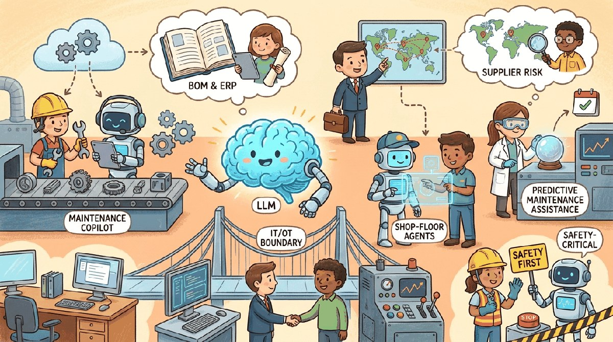

Manufacturing was slower than other industries to adopt LLMs, for good reasons: the cost of a hallucinated answer that causes a line shutdown, a defective part, or a safety incident is measured in lost production runs, not customer-support tickets. The 2025-2026 wave of successful deployments concentrates in the assistive layer: helping technicians find the right manual page faster, summarizing inspection reports, drafting work-order text, advising procurement on supplier risk. The LLM rarely touches the OT (operational technology) layer directly; it sits on the IT side and informs human decisions. That conservative architecture is not a limitation; it's the design that lets the technology ship at all.
Sections
- 78.1 Manufacturing Use Cases That Actually Work Maintenance copilots, inspection-report drafting, work-order generation, supplier risk, ERP/MES queries that pay back.
- 78.2 Failure Modes Specific to Manufacturing IT/OT boundary risks, prompt-injection on plant data, regulator-readiness pitfalls.
- 78.3 Manufacturing Regulatory and Standards Framework ISO, IEC, FDA, and OT-cyber standards that gate manufacturing AI deployment.
- 78.4 Plant-Floor Maintenance Copilot Architecture A reference architecture for a maintenance copilot bridging engineering documentation, sensor data, and work orders.
- 78.5 Postmortems and Named-Vendor Cases Real failure stories from manufacturing AI pilots and what they teach.
- 78.6 Music, Video, Design & Marketing Copy Creative-industry tooling: Suno, Udio, Runway, Adobe Firefly, marketing-copy stacks.
- 78.7 Workflow Integration, Rights, and Licensing IP, attribution, deepfake liability, and the union-bargaining changes that creative AI is forcing.
- 78.8 Ranking, Retrieval, and Personalization Where LLMs displace and augment classical ranking and recommendation pipelines.
- 78.9 LLM-Powered Recommendation & Search Perplexity, Google AI Overviews, Bing copilot: how LLM-powered search composes retrieval and generation.
- 78.10 Conversational Discovery and Named-Vendor Cases Pinterest Lens, Spotify DJ, and the case studies of conversational discovery that actually shipped.
What's Next?
This chapter begins with Section 78.1: Manufacturing Use Cases That Actually Work. Each section builds on the previous one, so we recommend reading them in order.